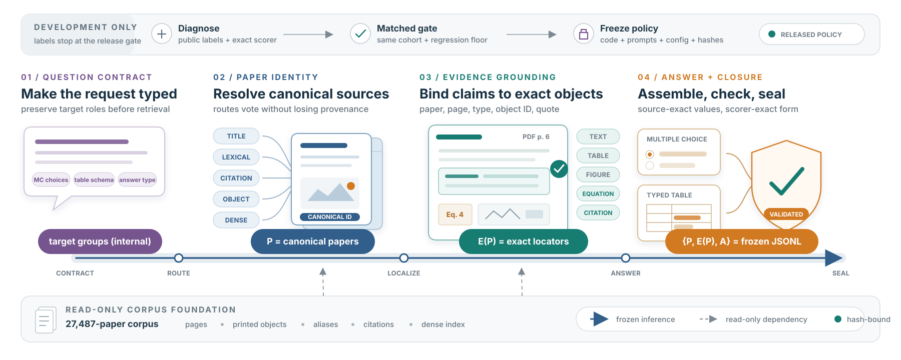

Target-aware retrieval
Alias, sparse, relation, object, and dense signals retain target-group provenance.
TRACE preserves identity from the question contract to canonical papers, exact source evidence, and schema-valid answers.
Five retrieval routes remain grouped by question target. Evidence is localized independently, and every scorer-visible object must close over the selected paper set.

Alias, sparse, relation, object, and dense signals retain target-group provenance.
Text, tables, figures, equations, and citations use exact source identities.
The observation unit and normalized row key are planned before values are assembled.
Paper closure, schemas, hashes, and the official validator gate every artifact.
Select a stage to see what it consumes, what it emits, and which deterministic gate prevents an invalid trace from advancing.
Question → contract planner → grouped retrieval → paper selection → PDF parsing → evidence localization and table extraction → answer assembly → closure → official validation.
Solid edges carry scorer-visible state. Dashed edges are read-only source dependencies.
Question → plan → retrieve → read sources → localize evidence → assemble answer → validate.
Team gabby’s 71-question official LitTraceQA submission.
The paper discusses adaptive diagnosis only as a lesson about scorer-visible identity, not as the selected reproducible result.
The public release contains no submitted predictions, benchmark PDFs, credentials, private paths, query allowlists, or answer constants.
pip install -e '.[test]'python scripts/fetch_data.pypython -m littraceqa.experiments.submit …pytest -qexport LITTRACEQA_SOURCE_REVISION="$(git rev-parse HEAD)"
python -m littraceqa.experiments.submit \
--config configs/trace-littraceqa.yaml \
--index-dir data/indexes \
--inputs data/test.jsonl \
--pool-path data/paper_metadata.jsonl \
--output outputs/predictions.jsonlHosted model behavior can change. Fixed seeds, source hashes, manifests, and the pinned validator make those changes visible rather than silently accepted.
The exact published commit is checked before it can become a release.
Source, configuration, documentation, schema, and tests only.
No credentials, private paths, application material, PDFs, predictions, or archives.
No query allowlists, released IDs, answer constants, parent outputs, or replay switches.
Full generation, strict parent refusal, official nested contract, and validator checks.
Tests, bytecode, CLI import, wheel build/install, and vendored validator load.
No symlinks or generated formats; clean diff and valid Git object database.
python scripts/audit_release.pyPASSFixed model names do not freeze a remote service; manifests make drift observable.
Scans, dense tables, merged headers, and nonstandard typography remain difficult.
A correct fact can miss through the wrong paper ID, locator type, page, object ID, row key, or cell.
Benchmark inputs, source PDFs, generated predictions, and credentials are intentionally not redistributed.